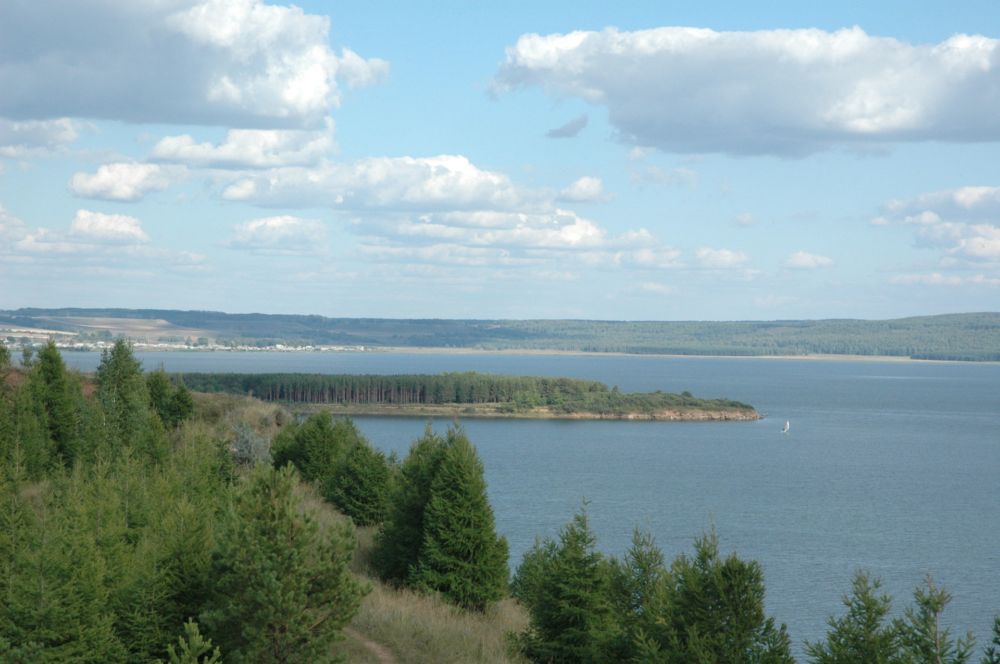

Озеро Кандры-куль

Озеро Кандры-куль - отличное место для кайтинга как летом, так и зимой. Ровная поверхность, отсутствие деревьев, столбов и проч, огромная площадь для катания!
Местоположение
С северной стороны (со стороны трассы М5) местность ровная, что исключает турбулентность при любом направлении ветра, можно оставить машину на площадке в 50 метрах от озера и практически сразу ехать.
История-легенда
Его название с башкирского языка звучит как «Бобровое озеро». Когда-то здесь водилось много бобров.
Другая история названия: Наименование произошло от слов «хан» и «тора» (с древнетюрк. — крепость), «куль» (озеро), то есть буквально означает — «Озеро ханской крепости». По мнению Б. А. Муратова название Кандры идёт от проживающего около этого озера башкир из рода кандры-еланы, что значит "с бобровой реки переселившиеся еланы". Бобровая река — Кондурча — место первоначального расселения в 14 в. предков кандры-елан (кондурча-еланы).